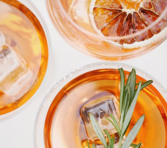

SÅDAN FÅR DU EN BILLIG BYTUR
Det kan være svært at sige nej til en bytur med vennerne og man ender oftest med at bruge mange flere penge end hvad man havde regnet med. Her er 6 råd til at spare på din bytur.
Har du overskud i budgettet?
Når man lægger et budget, er det vigtigt at være realistisk om sine udgifter og fornøjelser. Du skal derfor vurdere inden du tager afsted hvad du har råd til og hvordan du vil bruge dine penge inden i byen. Sæt derfor et maks. beløb til side af hvad du må bruge på byturen.
Hvis ikke du har råd, kan du foreslå at dig og dine venner kan lave noget der ikke koster penge så som picnic, en gåtur eller madklub.
Drik hjemmefra
Hold en forfest inden byen. Det er langt billigere at købe en sixpack i netto til 30 kr. end en fadøl til 50 kr. Hvis du drikker hjemmefra, sænker du derudover også lysten til at drikke nede i byen.
Drop maden på byturen
Når man først er fuld og sulten er prisen ikke et spørgsmål. Man ender ofte med at bruge alt for mange penge på MacDonalds, shawarma og pizza, det er derfor billigere at undgå dette scenarie.
Hvis du dog ikke kan holde dig fra at spise inden du skal sove, kan du forberede maden inden du tager i byen,så det er nemt at varme op. Du kommer højst sandsynligt ikke at have lyst til en leverpostejmad når du kommer hjem fra byen så vær realistisk med hvad du forbereder.
Gå i byen i hverdagen
Hvis det er muligt med dig og dine venners skema, kan man spare mange penge ved at gå i byen i hverdagen. Barer laver flere steder tilbud i hverdagene med bl.a. 2 for 1 pris, fri bar og andet. Planlæg derfor inden i tager i byen, hvor I tager hen og hvilke tilbud baren har.
Tænk over hvor og hvad I drikker
En øl i storbyer kan variere meget i pris alt efter hvilken bar man sidder ved. I kan derfor evt. sætte jer hen på en bar der er mindre populær eller et sted i ved er billigt.
Drinks er dyre i byen og varierer fra 60-180 kr. pr. drink. Man bliver derudover sjældent fuld af disse, da der bliver sparet på alkoholen. Man kan derfor spare ved for eksemplet at lave drinks hjemmefra og drikke øl i byen.
Drik vand
Jo mere vand du drikker i løbet af byturen, jo mindre tømmermænd for du dagen efter. Der er dog også det plus at jo mere vand man drikker i løbet af aftenen, jo mere stopper du tørsten for alkohol. Dette er praktisk da det giver dig naturligt mindre lyst til at drikke alkohol og man får det bedre dagen efter.